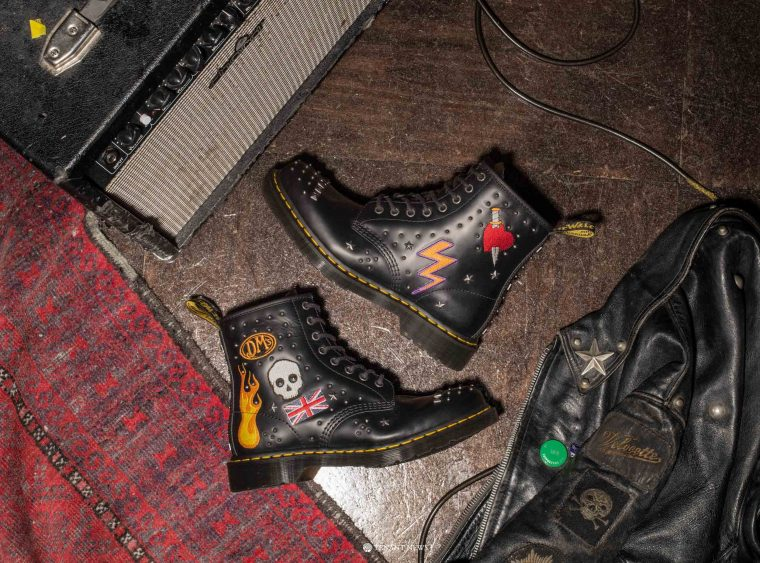
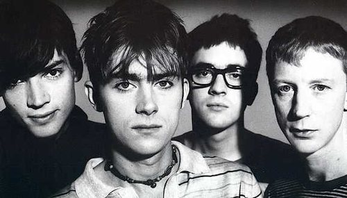
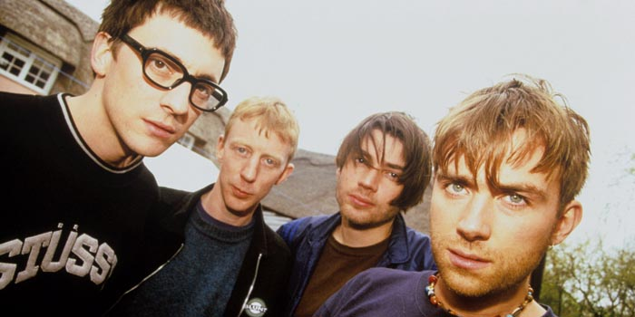
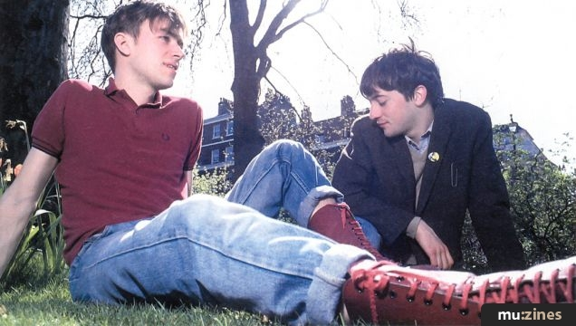
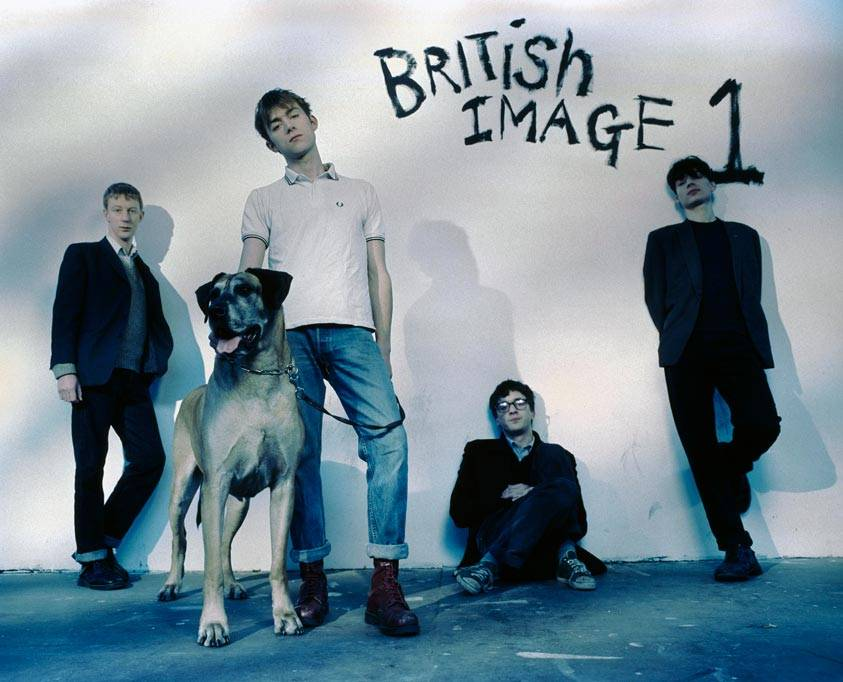
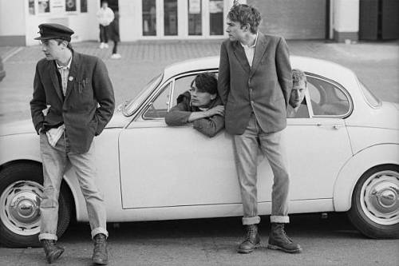

Confidence is a preference for the habitual voyeur of what is known as…” Britpop! Yes, we know it should be “Parklife”, but we can’t help thinking that the whole movement spearheaded by Blur, Oasis, Pulp, Suede and their ilk formed the last bold high-water mark for British pop culture. Think about it: for five halcyon years in the mid-1990s, Cool Britannia ruled everywhere, from Vanity Fair covers to Mr Damien Hirst’s shark in formaldehyde, via Brit-centric movies such as Trainspotting and Lock, Stock And Two Smoking Barrels. Oasis’ Mr Noel Gallagher partied with Mr Tony Blair at 10 Downing Street, and Mr Jarvis Cocker gave the bum’s rush to Mr Michael Jackson on the stage of – appropriately enough – the Brits. “Grunge and Americana had been the dominant thing,” said Ms Justine Frischmann, lead singer of Elastica, and former girlfriend of Blur’s Mr Damon Albarn. “Britpop was like a manifesto for the return of Britishness.” Part of that manifesto was a revolt into a peculiarly British sense of style. Britpop’s (predominantly male) figureheads put their sartorial influences through the blender – 1960s mods, 1970s teachers, 1980s hooligans – to create a look that mixed football-terrace labels such as Stone Island, Fila and Duffer of St George with reinvigorated Brit heritage brands such as Clarks, Dr Martens, Fred Perry and Burberry. It’s a style that’s resonating in menswear today (outlasting the movement itself). So with a 1990s revival in full swagger-y swing, let’s don some adidas Gazelles, polo shirts and bucket hats and raise a glass of champagne to the original trailblazers. Supernova, optional.

DAMON ALBARN
That Mr Damon Albarn is a man of many parts goes without saying – since Blur’s zenith in 1994, he’s been, variously, a cartoon character, an opera composer and a champion of world music – but, as Britpop crested, he portrayed himself as a bouncy cheeky chappie straight out of the East End, if not EastEnders (the latter accolade would eventually go to his “Parklife” co-vocalist, actor Mr Phil Daniels). He backed up the persona with market-stall chic that included Harrington jackets, Fred Perry T-shirts, tweed caps, knitted polos, bead necklaces and Dr Martens – everything but the cor-blimey trousers, in fact.
Blur are an English rock band formed in London in 1988. The band consists of singer Damon Albarn, guitarist Graham Coxon, bass guitarist Alex James and drummer Dave Rowntree. Their debut album, Leisure (1991), incorporated the sounds of Madchester and shoegaze. Following a stylistic change influenced by English guitar pop groups such as the Kinks, the Beatles and XTC, Blur released Modern Life Is Rubbish (1993), Parklife (1994) and The Great Escape (1995). As a result, the band helped to popularise the Britpop genre and achieved mass popularity in the UK, aided by a chart battle with rival band Oasis in 1995 dubbed "The Battle of Britpop". Blur's self-titled fifth album (1997) saw another stylistic shift, influenced by the lo-fi styles of American indie rock groups, and became their third UK chart-topping album. Its single "Song 2" brought the band mainstream success in the US for the first time. Their next album, 13 (1999) saw the band experimenting with electronic and gospel music, and featured more personal lyrics from Albarn and Coxon. Their seventh album, Think Tank (2003), continued their experimentation with electronic sounds and was shaped by Albarn's growing interest in hip hop and world music, featuring more minimal guitar work. Coxon left the band early in the sessions for Think Tank, and Blur disbanded for several years after the tour. In 2009, Blur reunited with Coxon and embarked on a European reunion tour. In the following years, they released several singles and compilations and toured internationally. In 2012, they received a Brit Award for Outstanding Contribution to Music. Their eighth album, The Magic Whip (2015), was their first in twelve years and the sixth consecutive Blur studio album to top the British charts. After the Magic Whip tour, Blur went on hiatus until the release of their ninth album, The Ballad of Darren in 2023.